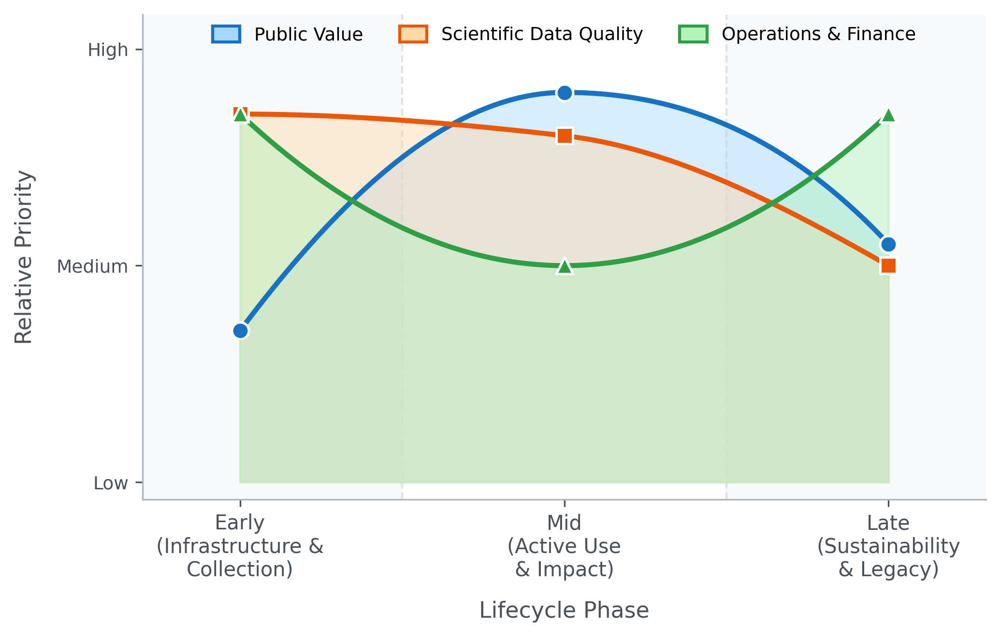

Lifecycle-aware evaluation of biomedical data ecosystems
![]()
Public biomedical data resources have become central scientific infrastructure, but evaluation of these investments is fragmented: each funded program tracks different metrics in different ways, preventing portfolio-level comparison and evidence-driven funding decisions. We construct a structured approach built on three complementary prioritization frameworks: public value (user engagement, citations, funded grants), scientific data quality (metadata completeness, FAIR compliance, data dictionaries), and operations and finance (infrastructure reliability, cost sustainability). The relative weight of each framework shifts predictably across a resource’s lifecycle, and uniform metric panels across phases misallocate funding as a result. Drawing on the NIH Common Fund Data Ecosystem, we describe a portfolio-wide dashboard that operationalizes the framework across 19 programs in near real time.
biomedical data ecosystems, research evaluation, FAIR, bibliometrics, NIH Common Fund, data sharing
Public biomedical data resources have become central infrastructure for biology, medicine, and the data sciences. NIH alone has invested billions over the past decade in initiatives that include The Cancer Genome Atlas [1], the Genotype-Tissue Expression project [2], the All of Us Research Program [3], and the 19 programs of the Common Fund. Whether any given resource is succeeding goes mostly unanswered. Each funded program tracks its own metrics in its own way, which blocks portfolio-level comparison and the evidence-driven funding decisions that comparison enables.
We argue that three prioritization frameworks long familiar in product strategy — public value, scientific quality, and operations and finance — map cleanly onto research data resources. Their relative weight shifts predictably across a resource’s lifecycle. Treating the frameworks as uniformly important across all phases is the reason portfolio decisions go wrong: early-phase investment in scientific quality looks expensive only when the comparison metric is mid-phase public value.
The NIH Common Fund Data Ecosystem (CFDE) [4] is a cross-cutting initiative that harmonizes metadata and tooling across the 19 Common Fund programs. The Council of Councils Working Group identified “facilitation of new scientific discovery” as the chief metric of CFDE success i. We use the CFDE as motivating case study and operational testbed, and describe the Integration and Coordination Center’s (ICC) first portfolio-wide dashboard, which operationalizes the model in near real time.
Three frameworks, one lifecycle
The frameworks overlap and sometimes conflict (more scientifically impactful datasets are typically more expensive to create and maintain), and weighted composite scoring such as Multi-Criteria Decision Analysis can balance them when needed [5,6]. Their relative weight shifts predictably across a resource’s lifecycle. In the early term of infrastructure-building and data collection, scientific quality and operations and finance dominate. In the mid term of active use within a funded period, all three matter, with public value taking on increasing importance. In the late, post-funding term, operations and finance and public value become the primary lenses (Figure 1). Uniform metric panels across phases misallocate funding in predictable ways; lifecycle-aware weighting is the operating principle that fixes this, not a refinement on top.

The public value framework captures outputs and impacts: user engagement, downloads, funded grants, publications, and downstream scientific influence. The scientific quality framework measures reusability and long-term value, guided by the FAIR principles (Findable, Accessible, Interoperable, Reusable) [7,8]. The operations and finance framework covers infrastructure reliability and cost sustainability, including robustness as funding sunsets.
Public value
The public value framework covers user behavior and scientific impact. Website engagement metrics (page views, time on page, actions/triggers, new vs. returning users) are easy to collect via platforms such as Google Analytics or Matomo, but they capture interest rather than actual data use. More direct evidence comes from downloads and compute jobs; cloud-hosted datasets let analysis activity be measured rather than inferred. For scientific software, the same framing extends to GitHub-style engagement markers such as stars, forks, and issues. Limitations are persistent: bots skew counts, VPN use confounds new-versus-returning tracking, and downloads cannot distinguish active use from passive acquisition. As AI-driven and agent-based traffic on data portals grows — Cloudflare data show training-purpose AI crawler traffic rising rapidly across 2024 and 2025 [9/] — the bot signal will need to be partitioned into noise to remove and demand to interpret.
Citations from PubMed, Scopus, Google Scholar, Clarivate, and OpenAlex give stronger proxies for scientific impact. The original GTEx paper [2] had accumulated 8,630 citations as of January 2026. Composite scores weighted by secondary citations capture cumulative downstream impact that simple counts miss, and citation networks reveal cross-disciplinary collaborations enabled by data sharing; successful sharing also produces a citation boost for the original data generators [10]. Citation counts lag actual use by months to years [11], and journal-scoring alternatives that weight by citing-paper properties better capture subject-specific repository impact than raw counts [12]. The deeper problem is the citation gap: fewer than 30% of secondary analyses formally cite their source data [13]. Standard bibliometrics therefore systematically understate reuse, and programs that lean on citation counts as their primary impact key performance indicator (KPI) are measuring reach rather than influence. Closing the gap requires data ecosystems to mine accession numbers (e.g., GEO accession numbers, NCBI BioProject IDs) from publication full text rather than rely on citation databases. A bibliometric analysis of NeuroMorpho.Org found that shared neural morphology data sustained a reuse rate constant for sixteen years and effectively doubled peer-reviewed discoveries in the field [13].
User-centered measures of perceived value offer complementary insight. Work integrating the Information System Success Model, the Technology Acceptance Model, and Consumer Perceived Value Theory identifies four entropy-weighted metrics that explain the majority of perceived value: number of datasets (breadth of coverage), data timeliness (currency for emergent challenges), search comprehensiveness (ability to return all relevant records across federated sources), and system responsiveness (loading times and API stability) [14]. These can be collected through structured user surveys.
The long-term measure of public value is practice change — a shift from hypothesis-driven research toward data-driven discovery, and from evidence-based practice toward practice-based evidence [15]. Concrete indicators include the cloud-versus-local analysis ratio, cross-disciplinary co-authorship across Common Fund programs, and the geographic and institutional breadth of the user base, especially participation by early-career investigators from under-resourced institutions. Until practice change is measurable, every other public-value metric is at best a leading indicator.
Scientific quality
The scientific quality framework addresses whether data can be found, understood, and reused. Poor data quality and poor annotation are the leading barriers to reuse [16]. Metadata spans three grain levels: study-level (name, contributors, dates, funding), data-level (storage format, data types, measurement platforms, biospecimen handling and collection conditions), and dataset-level (sample sizes, variable counts, demographic summaries, QC statistics). Summary metrics across these levels — metadata completeness, standardized metadata, QC compliance, available data dictionary, quality data dictionary — are more tractable for portfolio evaluation than cataloging every study-specific variable. The Standard Evaluation Framework for Large Health Care Data identifies 49 attributes across three domains (collection process, data, and data use) for assessing fitness for purpose [17]. Two of those attributes are particularly load-bearing for federated ecosystems: representativeness, the extent to which a dataset generalizes beyond its source population (critical for avoiding both Type 1 and Type 2 errors in scientific conclusions drawn from the data, as the European-ancestry bias in human-genetics studies has repeatedly demonstrated [18,19]), and linkability, the extent to which data integrate with external sources — a paramount concern for an ecosystem whose mission is cross-program query.
For scientific software, quality follows from open-source development practices: README and LICENSE files, automated testing [20], and inclusion in curated ecosystems like Bioconductor [21]. The ELIXIR “Top 10 Metrics for Life Science Software Good Practices” provides a prioritized scorecard spanning version control, discoverability, automated builds, test data, and documentation [22]. “Minimal Reimplementation” — preferring established libraries over custom code — is particularly relevant for federated ecosystems, where ad hoc code multiplies technical debt across the portfolio. PIsCO (Performance Indicators framework for Collection of bioinformatics resource metrics) automates server-side collection and visualization of these metrics so they can flow directly into evaluation dashboards [22].
A structured assessment of overall quality comes from FAIR maturity models. The shift from first-generation FAIR metrics (manually assessed) to second-generation maturity indicators (automated and machine-measurable) [8] is essential for the CFDE, where the volume of metadata prevents manual audit. The FAIRplus Dataset Maturity (FAIRplus-DSM) model ii, developed for the life sciences, defines six levels: Level 0 (no identifiers, local storage) through Level 5 (provenance in cross-community languages, enterprise-grade lifecycle management), with intermediate levels covering persistent identifiers, indexed metadata, community reporting standards such as MIAME, and linked-data semantic representation. The Research Data Alliance further classifies FAIR indicators as Essential (globally unique identifiers, open protocols), Important (machine-understandable knowledge representation), or Useful (automated agent access), giving evaluators a tiered roadmap. Automated tools such as the FAIR Evaluator test resources at scale via Compliance Tests, making continuous FAIR compliance monitoring feasible for large portfolios [8]. Manual FAIR audits do not scale to CFDE-sized portfolios; automated second-generation indicators are the difference between a stated FAIR commitment and an inspectable one.
Operations and finance
The operations and finance framework addresses infrastructure reliability and cost sustainability. Server-level metrics (uptime, page load time, latency, server errors, client errors) and compute-level metrics (download speed, cpu/gpu usage, memory usage, client queue times, job run times) are easy to capture but carry day-to-day variability from load, job size, and client-side network conditions, so trend monitoring is more informative than point-in-time values. For open-source projects, GitHub repository analytics provide an additional operational window: development velocity (commit frequency, pull-request review latency, merge frequency), repository-health composites, accumulating signals of technical debt (stale pull requests, abandoned branches, unresolved issues), and contributor dynamics that separate core-team commits from external community contributions and so register whether training and outreach are broadening adoption.
The Council of Councils identified sustainability as the “critical issue” for the CFDE, primarily because the programs that generate data are finite in duration i. Funding cost is the most accessible metric, but a complete picture decomposes it into sample collection, sample measurement, QC, data storage, data preservation (beyond the grant period), computing hardware, server maintenance, cloud-based computing, and personnel. The National Academies six-step framework for forecasting biomedical information-resource costs identifies cost-driver categories — data content, metadata, labor, infrastructure, compliance, governance — and notes that labor (curation and user support) consistently represents the single largest cost element iii. Compliance costs in particular (HIPAA, FISMA, regulatory governance for human-subjects data such as Kids First and GTEx) are often underestimated in initial budgeting, and cloud-computing costs add provider-specific, usage-dependent volatility that resists multi-year forecasting [23].
The harder sustainability question is the break-even point for data sharing. Curation costs are borne by data generators while reuse benefits accrue elsewhere — an asymmetry that means aggregate gains can fail to cover aggregate costs even when both are positive. A recent scoping review of open-science economics catalogs substantial measured value across efficiency, innovation, and growth from open data and software, though most studies estimate aggregate return on investment rather than the marginal break-even at the dataset level [24]. This argues for selective investment in high-value datasets rather than uniform support across the portfolio. Cost per data reuse event — total curation and hosting cost divided by documented reuse instances — gives a concrete, comparable KPI for portfolio-level decisions, separating direct benefits (economies of scale in data generation and curation) from extended benefits (downstream scientific discovery and clinical outcomes enabled by reuse).
Table 1 catalogs the metrics across the three frameworks, with collection difficulty, evaluation value, lifecycle phase, and interpretive notes.
| Metric | Difficulty of Collection | How Collected | Value | Lifecycle Phase | Notes |
|---|---|---|---|---|---|
| User Behavior Framework | |||||
| page views | Easy | Google Analytics or Matomo or similar platforms | Low | Mid | A minimum indicator of interest. |
| time on page | Easy | Google Analytics or Matomo or similar platforms | Low | Mid | A minimum indicator of interest. |
| actions/triggers | Easy | Google Analytics or Matomo or similar platforms | Medium | Mid | A moderate indicator of interest. |
| priority link clicks | Easy | Google Analytics or Matomo or similar platforms | Medium | Mid | A moderate indicator of interest. |
| new vs returning users | Easy | Google Analytics or Matomo or similar platforms | Medium | Mid | A moderate indicator of continuing interest. |
| downloads | Easy | Google Analytics or Matomo or similar platforms or Server-side logs | Medium-High | Mid | A strong indicator of interest. Downloading not equivalent to usage. |
| compute jobs | Easy | Compute scheduler logs or cloud environment logs | High | Mid | A direct indicator of interest. |
| tool downloads | Easy | Google Analytics or Matomo or similar platforms or server-side logs | Medium-High | Mid | A strong indicator of interest. |
| tool usage | Easy | Google Analytics or Matomo or similar platformsor API logs | High | Mid | A direct indicator of interest. |
| trend downloads | Medium | Google Analytics or Matomo or similar platforms or server-side logs, BI tools for visualization | Medium-High | Mid–Late | A strong indicator of change in interest over time. |
| trend compute jobs | Medium | Compute scheduler logs or cloud environment logs, BI tools for visualization | High | Mid–Late | A direct indicator of change in interest over time. |
| number grants | Hard | NIH RePORTER, Self-reporting | High | Mid–Late | Relevant grant data not publicly available. |
| number presentations | Hard | Self-reporting | Medium | Mid–Late | Data difficult to track and often not available in sufficient detail. |
| number citations | Easy | Google Scholar, PubMed, Scopus, Clarivate, OpenAlex, or other similar platforms | High | Mid–Late | A direct indicator of data value. Can miss downstream cumulative value. |
| number secondary citations | Medium | Google Scholar, PubMed, Scopus, Clarivate, OpenAlex, or other similar platforms | High | Late | An indirect measure of “downstream” value of initial publications. |
| citations + secondary citations | Medium | Google Scholar, PubMed, Scopus, Clarivate, OpenAlex, or citation network analysis | High | Late | A measure of cumulative impact over time of study data. |
| trend citations | Medium | Google Scholar, PubMed, Scopus, Clarivate, OpenAlex, or other similar platforms, BI tools | High | Late | Measures change in impact of data over time. Subject to time lag in publications. |
| data citation rate | Hard | Full-text search for accession numbers, Methods section mining | High | Mid–Late | <30% of secondary analyses formally cite datasets. Multi-pronged tracking required. |
| perceived value (user surveys) | Medium | Structured surveys (ISSM/TAM framework) | High | Mid–Late | Entropy-weighted: dataset breadth, timeliness, search comprehensiveness, responsiveness. |
| cloud adoption rate | Medium | Cloud workspace logs vs. download logs | Medium-High | Mid–Late | Proxy for computational paradigm shift (cloud vs. local analysis). |
| cross-disciplinary collaboration | Hard | Co-authorship network analysis | High | Late | Measures new partnerships fostered across Common Fund programs. |
| user diversity (geographic/institutional) | Medium | User registration data, IAM logs | Medium-High | Mid–Late | Measures democratization of access, especially for under-resourced institutions. |
| Scientific Quality Framework | |||||
| metadata completeness | Medium | Metadata validator, Schema validator | Medium-High | Early | Critical for drawing initial interest in study. |
| standardized metadata | Hard | Requires human-in-the-loop evaluation. | High | Early | Study-specific requirements. |
| quality-control (QC) compliance | Hard | Requires human-in-the-loop evaluation. | High | Early | Study-specific requirements. |
| data uniqueness | Hard | Requires human-in-the-loop evaluation. | Medium | Early | Subjective measure. |
| FAIR compliance | Hard | Requires human-in-the-loop evaluation. | High | All | Subjective measure. |
| available data dictionary | Medium | Checks on repository or documentation | Medium | Early | An essential component for a study to have. Does not guarantee quality. |
| quality data dictionary | Hard | Requires human-in-the-loop evaluation. | High | Early | A metric of quality of the data dictionary. |
| representativeness | Hard | Demographic and population metadata analysis | High | Early | Whether dataset generalizes beyond source population. Critical for avoiding false conclusions. |
| linkability | Hard | Schema and identifier compatibility assessment | High | All | Extent to which data integrates with external sources. Paramount for federated ecosystems. |
| software good practices score | Medium | ELIXIR Top 10 framework; automated collection via PIsCO | High | All | Covers version control, discoverability, automated builds, test data, documentation. |
| Operations and Finance Framework | |||||
| uptime | Easy | Application Performance Monitoring (APM) tools | Medium-Low | Mid–Late | Measure of server stability. |
| page load time | Easy | Application Performance Monitoring (APM) tools | Medium | Mid–Late | Measure of server performance. |
| latency | Easy | Application Performance Monitoring (APM) tools or Google Analytics ( not real-time) | Medium | Mid–Late | Measure of server performance. |
| server errors | Easy | Server-side logs or Application Performance Monitoring (APM) tools | Medium | Mid–Late | Measure of server stability and performance. |
| client errors | Medium | Application logs or Application Performance Monitoring (APM) tools | Low | Mid–Late | Measure of errors on client end. Possible not addressable. |
| download speed | Easy | Server-side logs or Application Performance Monitoring (APM) tools | Low-Medium | Mid–Late | Download times can be function of client connection speeds. |
| cpu/gpu usage | Easy | Application Performance Monitoring (APM) tools | High | Mid–Late | Important to evaluate performance and additional needs. |
| memory usage | Easy | Application Performance Monitoring (APM) tools | High | Mid–Late | Important to evaluate performance and additional needs. |
| number of users | Easy | Google Analytics or IAM logs for granular details (if available) | Medium | Mid–Late | Indirect measure of computational load/burden. |
| client queue times | Easy | Application Performance Monitoring (APM) tools or Cloud/infrastructure logs | Medium-High | Mid–Late | Long queue times can result in less usage. |
| job run times | Easy | Application Performance Monitoring (APM) tools or Cloud/infrastructure compute logs | Medium | Mid–Late | Excessive long job run times can result in less usage. |
| funding cost | Easy | NIH RePORTER | High | All | Total cost of study. Critical element in evaluating study feasibility and sustainability. |
| sample collection costs | Medium | Medium | Early | Cost typically associated with early study period. Cost does not impact sustainability. | |
| sample measurement costs | Medium | Medium | Early | Cost typically associated with early study period. Cost does not impact sustainability. | |
| QC costs | Medium | Medium | Early | Cost typically associated with early study period. Cost does not impact sustainability. | |
| data storage costs | Hard | High | All | Costs and requirements can fluctuate over study. | |
| data preservation costs | Hard | High | Late | Costs and requirements can fluctuate over study. Difficult to assess years in advance. | |
| computing hardware costs | Medium | Medium | Early | Costs often associated with initial study period, but replacement costs are possible. | |
| server maintenance costs | Hard | High | Mid–Late | Costs can fluctuate. Major source of cost in sustainability period. | |
| cloud-based computing costs | Hard | Cloud Cost Explorer tools or | High | Mid–Late | Costs are highly variable and subject to constant change (for both host and clients). Especially difficult to assess years in advance. |
| personnel costs | Medium | High | All | Can be measured in money or time. Requires committed time with relevant expertise. |
Implementation in practice
The CFDE Integration and Coordination Center (ICC) operates a portfolio-wide dashboard that demonstrates this evaluation model is implementable. The ICC currently collects a prioritized subset of the metrics described above (Table 2), drawing on NIH-provided structural data (NIH CFDE Website, NIH RePORTER) for funding and project context, PubMed and NIH iCite (including the Relative Citation Ratio) for publication and citation impact, GitHub for repository use, quality, and operations across the open-source software components, and Google Analytics for website engagement. Project teams onboard by labeling GitHub repositories with their NIH core project number (for example, “R01AG123456”) and granting the ICC a Google Analytics service account, with NIH program staff supporting the trust and access conversation.
| Source | Metrics collected |
|---|---|
| NIH CFDE Website | Funding Opportunities, ID, Activity Codes |
| NIH RePORTER | Project name, funding amounts, project descriptions, project start/end dates, PI names and affiliations, project keywords |
| NIH RePORTER (self-reported) | Publications, presentations, grants |
| PubMed | Publication details, citations |
| NIH iCite | Citation details and metrics (e.g., Relative Citation Ratio) |
| GitHub | Repository use (stars, forks, etc.) |
| GitHub | Repository quality (README, LICENSE, etc.) |
| GitHub | Repository operations (commits, pull requests, issues, etc.) |
| GitHub | Repository narrative summaries via AI |
| Google Analytics | Website engagement metrics (page views, new vs. returning users, top countries, etc.) |
The dashboard supports project- and portfolio-level views with ORCID-based authentication and role-based access, so teams see their own data while program managers see the full portfolio (Figure 2). A cross-center Metrics Working Group, including representatives from CFDE centers and NIH program staff, reviews coverage and plans new metrics as the portfolio grows.

Pilots underway target the gaps the frameworks identify. Full-text mining of accession numbers in publications addresses the data-citation gap directly. Event-organizer surveys, AI-generated narrative summaries of GitHub repositories, and structured-interview augmentation via generative AI [25] add the qualitative dimension that usage statistics cannot capture. The implementation demonstrates that lifecycle-aware portfolio evaluation is operationally tractable at NIH scale, in near real time, with manageable burden on individual projects. The metric set itself is not final, and the working-group structure described below is the mechanism by which it continues to evolve.
Concluding remarks
No framework operates in isolation, and quantitative metrics alone cannot capture the full picture. The NIH Common Fund’s “360-degree view” of program performance combines quantitative metrics with the contextual understanding only qualitative inquiry can provide iv. Mixed-method designs — usage statistics and citation data alongside structured user interviews, focus groups, and surveys — are essential for understanding why resources succeed or fail, not just what is happening [26]. Two designs suit ecosystem evaluation: sequential explanatory (quantitative data first, then qualitative inquiry to explain observed patterns) and convergent (both collected simultaneously and triangulated at interpretation) [27]. The ICC dashboard already integrates the quantitative side; pilot user surveys and AI-augmented interviews are starting to add the qualitative.
Logic models that connect inputs (funding, data, personnel) to activities (harmonization, training, curation), outputs (portals, trained users, tools), and outcomes (publications, funded grants, practice change) v give evaluators the scaffolding needed to identify which elements work. For the CFDE, two questions matter: to what extent are the elements of the logic model being implemented? and what are the critical paths through the model that lead to success? [28]. These models should be living documents, revised as programs transition from pilot to full implementation.
The harder challenge is closing the “know-do gap” — the distance between the information metrics provide and actual decision-making [29]. Evidence from healthcare quality improvement suggests that repeated, structured measurement itself drives behavioral change among data producers and managers, a Hawthorne effect [30]. Making metrics visible and regularly updated, as the ICC dashboard does, creates the sustained attention that incrementally improves data quality and FAIR compliance across the portfolio. NIH already requires regular FAIRness assessments and usage reporting vi, and the 2023 Data Management and Sharing Policy creates a structural opportunity to establish pre-policy baselines for sharing and reuse — a rare chance to test rigorously whether mandates translate into measurable ecosystem improvements. This window will not last; without pre-policy baselines captured now, the policy’s effect on sharing and reuse can be inferred but not measured.
The CFDE’s Metrics Working Group plays the role that GA4GH’s “Driver Projects” model has demonstrated elsewhere vii: iterating on a small priority set of metrics with NIH program staff and cross-center representatives before expanding portfolio-wide. What this paper proposes is not a final metric set but a shared evaluation language for federated biomedical data ecosystems — one that is lifecycle-aware, mixed-method by design, and operationally tractable at NIH scale.
Acknowledgments
This work was supported by the National Institutes of Health under grant U54OD036472, the CFDE Integration and Coordination Center (ICC). We thank the CFDE ICC Metrics Working Group for their ongoing contributions to the development and implementation of these evaluation frameworks and metrics, including representatives from CFDE programs and centers as well as NIH program staff. We also thank the CFDE project teams for their collaboration in sharing data and providing feedback on the dashboard and metrics collection processes.
Declaration of interests
The authors declare no competing interests.
Resources
i Council of Councils CFDE Working Group, Final Report: https://dpcpsi.nih.gov/sites/default/files/Day2-1225PM-Final-Report-CFDE-CoC-WG-HorwitzWilder_.pdf
ii FAIRplus Dataset Maturity (FAIRplus-DSM) Indicators: https://fairplus.github.io/Data-Maturity/docs/Indicators
iii National Academies, Open Science by Design: Realizing a Vision for 21st Century Research: https://www.ncbi.nlm.nih.gov/books/NBK562708
iv NIH Common Fund Data Ecosystem: https://commonfund.nih.gov/dataecosystem
v W. K. Kellogg Foundation, Logic Model Development Guide: https://www.wkkf.org/resource-directory/resources/2004/01/logic-model-development-guide
vi NIH NOT-OD-21-013 (Final NIH Policy for Data Management and Sharing): https://grants.nih.gov/grants/guide/notice-files/NOT-OD-21-013.html
vii GA4GH Strategic Roadmap: https://www.ga4gh.org/about-us/strategic-road-map
Declaration of generative AI and AI-assisted technologies in the writing process
During the preparation of this work the author(s) used Claude from Anthropic in order to improve readability and clarity. After using this tool/service, the author(s) reviewed and edited the content as needed and take(s) full responsibility for the content of the published article.
CFDE (Common Fund Data Ecosystem): NIH cross-cutting initiative that harmonizes metadata and tooling across 19 Common Fund programs so researchers can find and reuse data across the portfolio.
CWIC (Cloud Workspace Implementation Center): CFDE center providing computational infrastructure for in-place analysis of large-scale shared datasets.
DMS Policy (NIH Data Management and Sharing Policy): The 2023 NIH policy requiring grantees to plan for data sharing, which establishes a pre-policy baseline against which sharing and reuse improvements can be measured.
DRC (Data Resource Center): CFDE center enabling discovery of CFDE data and other resources.
ELIXIR: European life-sciences research infrastructure that publishes a ten-metric framework for evaluating bioinformatics software, covering version control, discoverability, automated builds, test data, and documentation.
FAIR: Findable, Accessible, Interoperable, Reusable — a widely adopted set of principles for making research data reliably reusable.
FAIRplus-DSM (FAIRplus Dataset Maturity model): Six-level maturity scale that operationalizes the FAIR principles for life-sciences data, from Level 0 (no identifiers, local storage) to Level 5 (enterprise-grade lifecycle management with cross-community provenance).
GA4GH (Global Alliance for Genomics and Health): International standards organization whose “Driver Projects” model — small pilots that road-test new standards before portfolio-wide adoption — informs the CFDE’s Metrics Working Group.
ICC (Integration and Coordination Center): CFDE center responsible for cross-portfolio coordination, evaluation, and the centralized metrics dashboard described here.
KC (Knowledge Center): CFDE center supporting analyses that yield cross-cutting biological insights through applications and outreach.
MCDA (Multi-Criteria Decision Analysis): A decision-making approach that combines multiple weighted performance dimensions into a single composite score.
MoSCoW: Product-management prioritization framework labeling items Must-have, Should-have, Could-have, or Won’t-have.
PIsCO (Performance Indicators framework for Collection of bioinformatics resource metrics): Server-side framework for automated collection and visualization of software-quality metrics, allowing software health data to feed an evaluation dashboard directly.
RCR (Relative Citation Ratio): NIH iCite metric that benchmarks an article’s citation rate against field-specific expectations.
RDA (Research Data Alliance): International community that classifies FAIR indicators by priority (Essential, Important, Useful), providing a tiered roadmap for incremental FAIR improvement.
RICE (Reach, Impact, Confidence, Effort): Product-management prioritization framework that scores candidate work items by Reach × Impact × Confidence / Effort.
TC (Training Center): CFDE center addressing skills development and the cultural shift required for cloud-based scientific computing.
Public biomedical data ecosystems are now core scientific infrastructure, but each funded program tracks its own metrics differently, so portfolio-level comparison is effectively impossible. We argue that three product-strategy frameworks — public value, scientific quality, operations and finance — map onto research data resources, that their weight shifts predictably across a resource’s lifecycle, and that ignoring this shift misallocates funding. The NIH Common Fund Data Ecosystem operationalizes the model across 19 programs in real time.
At what break-even point does the curation cost of a shared dataset get recovered by downstream reuse, and how should that point inform the decision to invest in further sharing versus letting a resource sunset?
As the data-citation gap persists, what KPI should replace raw citation counts as the primary measure of data-resource impact, and how do we collect it at portfolio scale without burdening individual projects?
How should cross-disciplinary co-authorship arising from a shared dataset be weighted relative to direct citation when evaluating a resource’s scientific influence?
What is the right cadence for re-assessing the FAIR maturity of an active data resource, who owns the re-assessment, and how do we keep the process tractable as portfolios grow?
As AI-driven and agent-based traffic on data portals continues to grow, how do we partition it into noise to remove versus signal to interpret as evidence of resource value?
What governance structures keep federated evaluation frameworks honest as they evolve, so that metrics continue to serve funders’ strategic questions rather than drifting toward data managers’ reporting convenience?
Wilkinson MD et al. The FAIR Guiding Principles for scientific data management and stewardship. Scientific Data, 2016 [7]. The foundational definition of the principles that anchor the scientific-quality framework throughout this paper.
Wilkinson MD et al. A design framework and exemplar metrics for FAIRness. Scientific Data, 2018 [8]. Operationalizes FAIR as machine-measurable indicators, which is what makes automated FAIR-compliance monitoring tractable at the portfolio scale we describe.
Tedersoo L et al. Data sharing practices and data availability upon request differ across scientific disciplines [31]. Provides the bibliometric evidence that fewer than 30% of secondary analyses formally cite source data, the core empirical basis for our argument that citation-count KPIs systematically understate reuse.
The GTEx Consortium. The Genotype-Tissue Expression (GTEx) project. Nature Genetics, 2013 [2]. The paradigmatic example of a high-reuse public biomedical data resource (8,630 citations as of January 2026), used here to anchor the public-value framework with a concrete case.
Centers for Disease Control and Prevention. Standard Evaluation Framework for Large Health Care Data [17]. The 49-attribute fitness-for-purpose framework whose representativeness and linkability attributes are particularly load-bearing for federated ecosystems like the CFDE.